« Ceux qui oublient l’histoire sont condamnés à la revivre », dit le proverbe. Notre mission quotidienne ne consiste pas uniquement à conduire les installations mais à profiter de l’expérience que nous accumulons pour mieux conduire ces mêmes installations.
Parce qu’il nous est impossible de mémoriser tout ce que l’on fait dans une journée, parce que nous souhaitons profiter de l’expérience des autres et parce que l’homme n’a rien trouvé de plus efficace depuis des millénaires, nous écrivons jour après jour notre histoire pour capitaliser nos savoirs.
Dans ce module, vous allez mesurer l’importance du suivi documentaire et statistique de l’exploitation.
Dans un premier temps, nous développerons les raisons qui motivent le suivi par l’écrit. Ensuite, nous passerons en revue les modes de suivi possibles et les illustrerons par des exemples de documents existants. Enfin, nous insisterons sur l’analyse des données et les conséquences pratiques sur l’exploitation.
Nous reconnaissons tous que la transmission du savoir est primordiale. Jusqu’à ce jour, l’écrit s’est imposé comme le vecteur le plus efficace.
Nous avons tous le même réflexe : lorsqu’on doit se souvenir de quelque chose d’important, on l’écrit. Car, même sur un petit morceau de journal chiffonné, l’écrit reste. C’est ainsi que nous connaissons aujourd’hui les techniques de chasse des hommes des cavernes. Non pas qu’elles soient toujours utilisées, mais parce qu’elles ont été dessinées sur des murs, comme dans la grotte de Lascaux il y a plus de quinze mille ans.
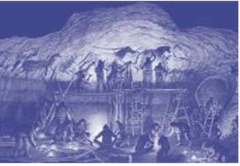
Le temps, c’est de l’argent, dit-on. Pour accéder rapidement à l’information, nous avons l’habitude de l’organiser, de la structurer de manière cohérente selon des critères reconnus par tous.
Les documents de tous les jours répondent aux deux points évoqués ci-avant, l’annuaire téléphonique par exemple. C’est un document écrit, structuré par ville et organisé par ordre alphabétique. La ville et l’alphabet étant des critères reconnus par chacun d’entre nous, il ne faut donc pas plus de quelques minutes pour trouver un numéro de téléphone dans un document qui en compte plusieurs millions.
Nous travaillons en équipe, nous attendons donc des autres qu’ils nous rendent compte de leurs actions. En échange, nous acceptons de leur rendre compte des nôtres :
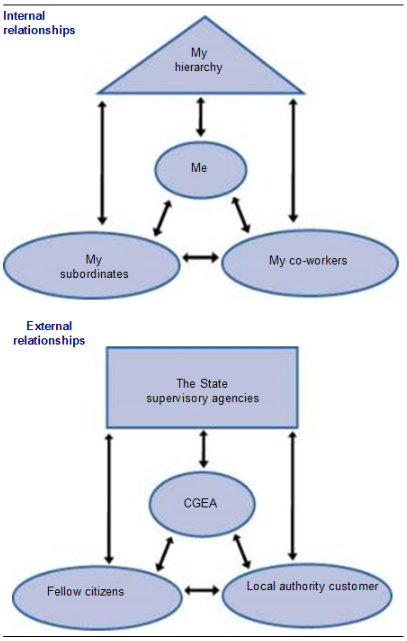
À nos clients :
C’est parce que nous rendons des comptes a posteriori que nous sommes libres de nos actions. Si nous sommes défaillants ou si nos comptes rendus sont inexacts, le contrôle devient continu et systématique, nous perdons notre liberté.
Nous reconnaissons tous que l’erreur est humaine. Pour mettre à profit le travail d’équipe et limiter l’impact de certains problèmes, il doit y avoir partage de l’information.
De la même façon, nous avons tout intérêt à favoriser la transparence dans nos relations internes et externes, car cela sera apprécié par nos clients, par nos organismes de contrôle ou par nos collaborateurs.
Rendre compte, c’est accepter la délégation d’une mission, c’est reconnaître la confiance que les autres nous accordent pour mener à bien cette mission.
Pour résoudre les problèmes que nous rencontrons, nous devons partager, échanger ou confronter les informations avec d’autres personnes. Plus le problème est complexe, plus il faut s’assurer de la qualité et de l’exactitude des informations disponibles.
Que le problème soit simple ou complexe, il faut généralement documenter l’analyse pour trouver rapidement la solution. Il est donc dans l’intérêt de tous de contribuer, au travers de l’écrit, à l’accroissement des bases d’informations sur le fonctionnement de nos usines.
Il existe de nombreuses façons de consigner la connaissance. Cependant, du carnet de notes au CD-Rom, différents modes de suivi peuvent être identifiés.
Les vecteurs usuels sont le texte, les nombres, le son, l’image. L’imagination de l’homme a conduit à la combinaison de plusieurs vecteurs. Par exemple, le texte et l’image ont été combiné pour codifier le son : ce sont les partitions.
On remarquera que certains vecteurs sont universels, comme l’image, le son ou les nombres, alors que le texte est propre à des groupes d’individus. Il se décline en alphabet et en langue. Il y a un intérêt à rechercher le meilleur vecteur de communication en fonction du type de message que l’on souhaite faire passer. Dans nos métiers, l’aspect technique est important et un bon dessin évite de longues pages de texte.
Il existe trois grandes familles de supports : les supports papier, les supports électromagnétiques et les supports optiques. Le plus ancien est le support papier. Il est très répandu dans le suivi manuel.
Les supports électromagnétiques sont plus nouveaux. On y retrouve les bandes magnétiques audio ou vidéo, les disques informatiques ou les cartes à puces.
Le plus récent est le support optique, très connu sous le nom de compact disque ou CD.
Tous ces supports ont été développés pour contenir de plus en plus d’informations. Un seul DVD-Rom (support optique) contient autant d’informations que les vingt volumes d’une encyclopédie (support papier) d’un grand éditeur.
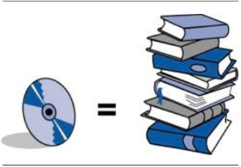
L’acquisition de l’information peut être manuelle ou automatique. Le choix entre les deux modes d’acquisition dépend :
Tous les documents sont destinés à être lus. Il est important de définir le profil du futur utilisateur du document.
Lorsque le programme de formation au métier de l’incinération a été conçu, nous nous sommes demandés jusqu’à quel niveau de détail il était intéressant d’aller. Était-il, par exemple, important d’expliquer aux futurs opérateurs d’une usine comment on finance des travaux d’amélioration ? Réponse : non, car c’est une information importante mais pour les comptables.
De la même façon, est-il suffisant de noter dans le cahier de quart le débit de vapeur sortie chaudière toutes les deux semaines ? Non, le niveau de précision ne serait pas suffisant.
Chaque personne, en fonction de sa position (mission, niveau hiérarchique) a besoin d’une information plus ou moins détaillée. C’est pourquoi les documents de suivi ne sont pas laissés à l’initiative de chacun mais ont été définis une fois pour toutes. Le cahier de consignation ou le bon de travail doivent contenir des informations précises : pas plus, ils deviendraient trop lourds à utiliser ; pas moins, ils seraient alors incomplets.
Une information n’a de valeur que si elle est représentative de la réalité. Il faut pour cela vérifier la précision et la fréquence de la mesure ou de l’information.
Nous utilisons souvent les nombres pour construire notre base de connaissance car ils donnent une description précise et compacte de la réalité. Il fait chaud ou il fait froid ? Difficile à dire. En revanche, il n’y a aucun doute, il fait 19 °C dans la salle de commande.
Le nombre relié à une unité de mesure donne une information précise. Le nombre sans l’unité ne donne aucune information. C’est pourquoi, les documents de suivi que vous utilisez sont majoritairement construits sur des nombres et des unités.
Pour rendre compte de l’évolution de la réalité, il est nécessaire d’effectuer des relevés à intervalles de temps réguliers. Comme pour un film, c’est la juxtaposition successive des images qui donne le mouvement.
Nous avons vu que les informations que nous consignons dans nos documents doivent être représentatives. Il va donc falloir adapter l’intervalle de temps entre deux enregistrements – on dit la fréquence d’enregistrement – à la vitesse à laquelle ce que l’on observe évolue.
Expérience :
Prenons l’exemple d’un disque qui tourne autour de son axe en 1 minute. On veut connaître le mouvement du point A.
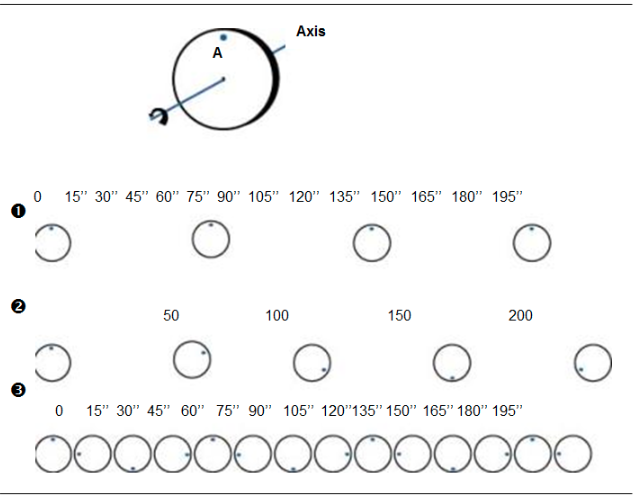
1 Si on prend un photo toutes les minutes, on pensera que le disque ne bouge pas.
2 Si nous prenons une photo du disque en rotation toutes les 50 secondes, nous verrons que le point A se déplace mais dans le sens opposé au sens de rotation réel du disque.
3 Si nous prenons une photo du disque en rotation toutes les 15 secondes, nous verrons que le point A se déplace dans la même direction que le disque.
On peut démontrer mathématiquement que pour représenter la réalité, il faut faire des relevés avec une fréquence au moins deux fois supérieure à la fréquence la plus élevée du phénomène observé.
Cette règle est particulièrement importante dans l’observation automatique de données très variables, comme l’intensité aux bornes de l’électro-filtre, les variateurs de fréquence, etc.
Voyons maintenant comment toutes les généralités présentées jusqu’ici se retrouvent dans les documents que vous utilisez au jour le jour.
Le fonctionnement suivi d’une usine devrait conduire à la présence a minima des documents suivants :
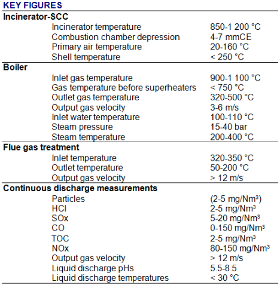
* toutes les concentrations sont données en mg/Nm3 de fumées sèches corrigées à 11\
C’est l’histoire « au fil de l’eau » de la conduite de l’usine. Le cahier de quart est renseigné par un exploitant (mode d’acquisition manuel) pour un autre exploitant afin de lui donner une vision rapide et synthétique de l’état de fonctionnement de l’usine (niveau d’information). Il repose sur le suivi d’éléments chiffrés et de commentaires (les vecteurs) recueillis dans un cahier (support papier). La qualité de l’information qu’il contient dépend de la précision des instruments de mesure dans l’usine mais surtout de la rigueur de l’opérateur durant les relevés.
Il n’y a donc pas un cahier de quart standard, mais des cahiers de quart adaptés à chaque usine pour remplir le même objectif.
Nous verrons dans le chapitre 4 que pour obtenir une vision rapide et synthétique de l’état du fonctionnement de l’usine, le lecteur doit être un « homme métier » capable d’appuyer son analyse sur son expérience et sa connaissance des installations.Le cahier de consignation et de déconsignation
Il doit garantir que tous les intervenants concernés ont bien le même niveau d’information afin de sécuriser une opération. Le cahier de consignation est renseigné par un exploitant pour un autre exploitant, et inversement (mode d’acquisition manuel).
Il identifie les équipements, la durée et le type d’intervention ainsi que les personnes qui vont y participer (niveau d’information). C’est un document manuscrit sur support papier.
Dans certaines usines, le suivi de la consignation est informatisé. Il s’agit d’un document de type texte sur support électromagnétique. De la qualité et du respect des informations qu’il contient dépend la sécurité des personnes.
On retrouve ici toute l’importance du compte rendu dans le fonctionnement en équipe. L’opérateur d’entretien rend compte à l’opérateur de conduite que tel équipement est consigné. Celui-ci lui confirme la bonne prise en compte de cette consignation à travers la signature du cahier. Une fois l’intervention terminée, la procédure de déconsignation garantit que les deux opérateurs se sont rendu compte mutuellement du nouvel état de disponibilité de l’installation.
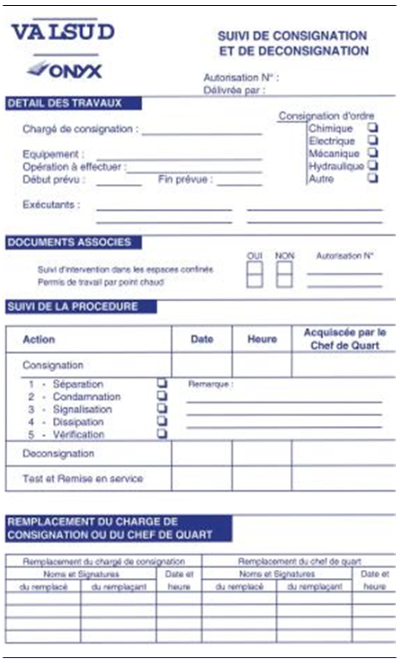
C’est un document de synthèse, plus ou moins détaillé, qui donne à l’homme métier une vision du fonctionnement de l’installation. Il est composé de ratios dont l’analyse historique ou comparative avec les chiffres clefs du métier conduit le lecteur à s’interroger sur d’éventuelles dérives.
Le tableau de bord, de par sa simplicité de lecture, ne peut pas être exhaustif. Il ne donnera pas la cause d’un dysfonctionnement, il permet de donner l’alerte et de susciter la curiosité.
Une seule page de chiffres pour identifier le bon ou le mauvais fonctionnement de l’usine durant un jour, un mois ou un an, tel est l’objet du tableau de bord. La grande majorité des informations que vous consignez se retrouvent dans le tableau sous forme de synthèse.
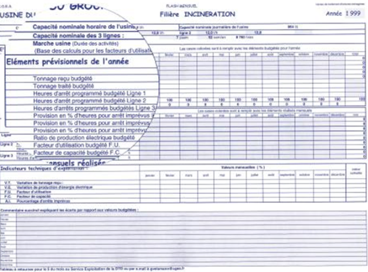
Une personne, qu’elle soit à l’usine, en charge de plusieurs unités de traitement ou au siège social, ne peut analyser convenablement qu’une certaine quantité d’information. Il est donc nécessaire de concentrer celle-ci au fur et à mesure que l’on monte dans la hiérarchie de l’entreprise.
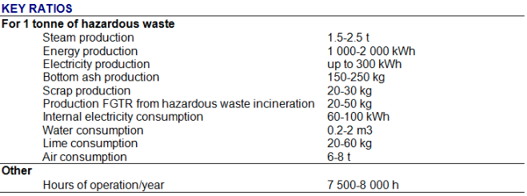
Ce document assure la bonne transmission d’information tout au long d’une intervention de maintenance. Il constitue également la base de l’histoire de la maintenance dans l’usine en décrivant de façon précise l’intervention.
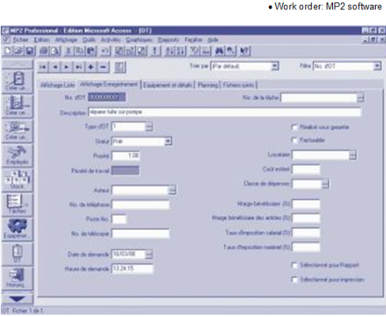
Le bon de travail est un document manuscrit sur support papier. Son niveau de détail est précisément défini dans le cadre d’une procédure d’utilisation. Nous verrons dans le chapitre suivant que les bons de travail sont à l’origine de nombreux autres documents d’analyse et de synthèse. Il est donc important que les informations qui y sont consignées soient précises et de qualité, et qu’elles soient conservées dans une base de données interrogables à l’aide d’un logiciel GMAO.
Dans certaines situations, deux personnes souhaitent faire appel à un tiers pour rendre compte de la réalité. C’est le cas dans l’exploitation d’usine d’incinération entre la SARPI/ONYX et ses clients ou entre SARPI/ONYX et les organismes d’État de tutelle.
Pour réaliser l’analyse des rejets de l’usine, l’ensemble des parties fait appel à un laboratoire dont il reconnaît la compétence pour lui rendre compte. Celui-ci retourne les informations demandées, généralement à travers un rapport d’expertise. Il atteste du suivi rigoureux des procédures de détermination des résultats.
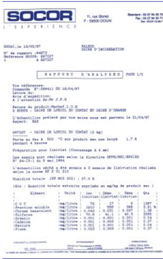
Dans certaines situations, deux personnes souhaitent utiliser un tiers pour rendre compte de la réalité. C'est le cas de l'exploitation d'une usine d'incinération entre la SARPI/ONYX et ses clients ou entre la SARPI/ONYX et les tutelles de l'Etat.
Pour analyser les rejets de l'usine, chacun fait appel à un laboratoire dont il reconnaît l'expertise pour lui en rendre compte. Le laboratoire renvoie les informations demandées, généralement dans un rapport d'expertise. Il atteste du suivi rigoureux des procédures de détermination des résultats.
C’est une source d’information sur support électromagnétique. Son mode d’acquisition est automatique et sa fréquence d’enregistrement est élevée (plusieurs enregistrements par minute).
L’information y est structurée par groupes fonctionnels, c’est-à-dire par ensemble d’équipements concourrant à l’accomplissement de la même fonction (four-chaudière, traitement des fumées, groupe turbo-alternateur, etc.).
Le niveau de détail d’un SNCC est très important. On remarquera ici la différence entre le cahier de quart et le SNCC. Le premier a pour objectif de donner une vision synthétique et rapide de l’état de l’installation alors que le second est un compte rendu en temps réel de l’état de l’ensemble des équipements. Ils sont tous les deux produits à partir de la même réalité, des mêmes informations. Cependant, le SNCC permet de contrôler et conduire l’installation, le cahier de quart non.
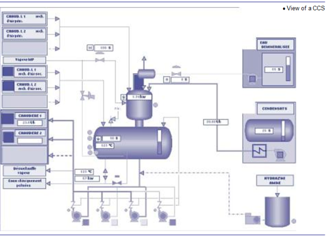
Une machine comme un SNCC est capable de produire une importante quantité d’information numérique et logique (vrai ou faux) en temps réel. Elle peut également effectuer un grand nombre de calculs afin d’ajuster un paramètre en fonction de l’évolution d’autres paramètres. Mais, la machine est incapable de produire un cahier de quart, c’est-à-dire de faire la synthèse du fonctionnement de l’usine pendant huit ou douze heures ou de définir ce qui est important de savoir pour la suite.
L’opérateur reste plus performant que la machine pour l’analyse et la synthèse de l’information. Votre mission ne consiste donc pas à faire ce que fait le SNCC, il est plus rapide que l’homme pour cela et il le restera. Elle consiste à vérifier que le SNCC prend les bonnes décisions et à corriger ses erreurs.
C’est en fonction des documents et des sources d’informations dont vous disposez, de votre esprit d’analyse et de synthèse que vous améliorerez la qualité de vos interventions.
Voyons maintenant quels sont les outils le plus fréquemment utilisés pour analyser les informations, résoudre les problèmes et trouver les solutions optimales.
Lorsqu’un groupe de personnes considère qu’il a mené l’analyse d’une situation ou d’un problème donné à son terme et qu’il a identifié la liste des actions à entreprendre pour résoudre celui-ci, il consigne cette liste d’actions par écrit. On appelle cela une procédure.
Il existe de nombreuses procédures dans une usine d’incinération. On peut nommer la procédure de démarrage de l’usine, la procédure de contrôle des arrivages de déchets ou encore la procédure d’évacuation en cas d’incendie.
La procédure est un outil très important dans le fonctionnement de l’usine. Elle permet de faire profiter l’ensemble du personnel des meilleures solutions pour faire face à une situation clairement identifiée.
Il est donc impératif de connaître et de respecter les procédures en vigueur dans votre usine.
La procédure a cependant des limites. Tout d’abord, il se peut qu’elle contienne une imprécision. Même un travail de groupe ne garantit pas l’absence d’erreur. Ensuite, la procédure a été rédigée pour une situation bien précise et il n’est pas impossible qu’un élément de cette situation ait changé. Pour ces deux raisons principales, il est intéressant de reconsidérer la validité d’une procédure de façon régulière.
N’hésitez donc pas à vous interroger sur la pertinence de tel ou tel point des procédures que vous appliquez et à faire part de vos réflexions aux autres membres de l’usine.
C’est une valeur définie comme représentative du bon fonctionnement d’un équipement. Elle résulte de l’analyse du constructeur et du contexte dans lequel fonctionne l’équipement. On peut citer la pression de refoulement d’une pompe, la température de l’eau de la bâche alimentaire, le pH des rejets liquides, etc.
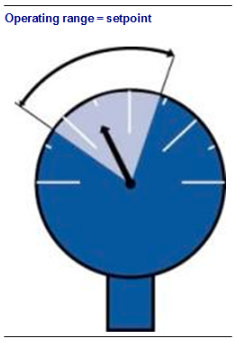
Lorsque la valeur mesurée correspond à la consigne ou plus généralement à une plage de mesure, la situation est considérée comme satisfaisante. La consigne est la transposition numérique de la procédure. Elle a les mêmes avantages et inconvénients.
Il permet de comparer l’évolution d’une valeur sur la base d’un référentiel constant. On peut considérer le ratio comme une vitesse. Mais contrairement à nos habitudes, le temps a été remplacé par le poids, les heures ont été remplacées par des tonnes de déchets. On ne cherche pas à savoir quelle est la consommation d’eau de l’usine par heure mais par tonne de déchets traités, autrement dit quelle est la vitesse de consommation d’eau à la tonne de déchets.
Un bon fonctionnement est un fonctionnement sans à-coups, c’est-à-dire sans changement de vitesse brutal. Il existe donc divers documents de suivi qui font la synthèse des données que vous enregistrez dans le cahier de quart.
Les ratios les plus fréquemment utilisés sont :
Le tableau de bord des données techniques établi à partir de vos relevés permet de suivre le fonctionnement sans à-coups, à vitesse constante, de l’usine. Comme dans votre cas avec le cahier de quart, le responsable de votre usine rend compte du fonctionnement au travers d’un document chiffré sur support papier destiné à sa hiérarchie. Le niveau de détail et de synthèse des informations a bien sûr évolué mais les notions de base du suivi documentaire sont toujours les mêmes.
Plusieurs données de fonctionnement peuvent être liées physiquement. L’évolution d’une donnée s’accompagne automatiquement par l’évolution d’une ou plusieurs valeurs liées. On dit qu’il existe une corrélation entre la valeur A et la valeur B.
Dans le module 27, vous avez étudié les bilans masse-énergie, donc les corrélations basées sur l’idée que tout ce qui rentre doit sortir.
L’analyse croisée fait souvent appel au bon sens. Prenons l’exemple de l’air. Puisque durant la combustion, les déchets se transforment pour partie en gaz chauds (le reste étant des mâchefers et des cendres), il est logique de penser que le débit du ventilateur d’exhaure devra être supérieur à la somme des débits d’air primaire et secondaire. Si la corrélation n’est pas observée, il y a un problème.
Il y a peu de chance que le système numérique de contrôle-commande remarque ce type d’erreur. Il continuera à fonctionner jusqu’à l’apparition d’une alarme. En revanche, votre esprit d’analyse et de synthèse doit identifier le défaut avant la machine et conduire à l’action corrective.
Nous avons l’habitude d’utiliser les statistiques car elles sont omniprésentes dans l’analyse des phénomènes de société. On entend souvent parler du Français moyen. Cet humain, résultat de nombreux calculs mathématiques, n’existe pas mais il permet de prendre des décisions.
Dans le module 22, la durée de vie des roulements a été évoquée. Cette durée est le résultat d’une analyse statistique de la vie d’un roulement. Le constructeur doit garantir une durée de vie. Comment va-t-il résoudre ce problème ?
1 Il observe un nombre représentatif de cas, c'est ce qu'on appelle un échantillon.
2 Il calcule la moyenne et l'écart type (l'écart type étant représentatif de la dispersion autour de la moyenne).
3 Il définit le niveau de risque qu'il veut prendre. Par exemple, il souhaite que la garantie soit atteinte dans 99 \
4 Grâce aux mathématiques, il calcule la durée de vie qu'il peut garantir.
Nous aussi, nous souhaitons garantir la durée de vie de nos équipements. C’est pourquoi, il est nécessaire de recueillir une grande quantité d’informations au travers des bons de travail.
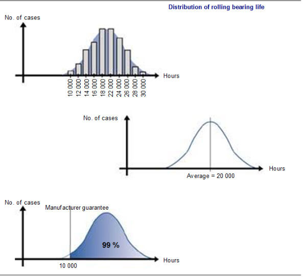
Elle permet de définir l’état futur d’un système en se basant uniquement sur le passé. On peut distinguer deux grandes familles : les courbes de tendance et le vécu. Vous utilisez déjà ces deux modes d’analyse sans pour autant faire appel aux outils mathématiques qui formalisent cette discipline.
Le suivi graphique sur le SNCC de certaines valeurs du procédé, comme le débit vapeur, s’apparente à une analyse prédictive du type courbe de tendance. Un opérateur averti peut prévoir l’emballement ou la mort du feu uniquement en regardant l’évolution de la courbe de production de vapeur.
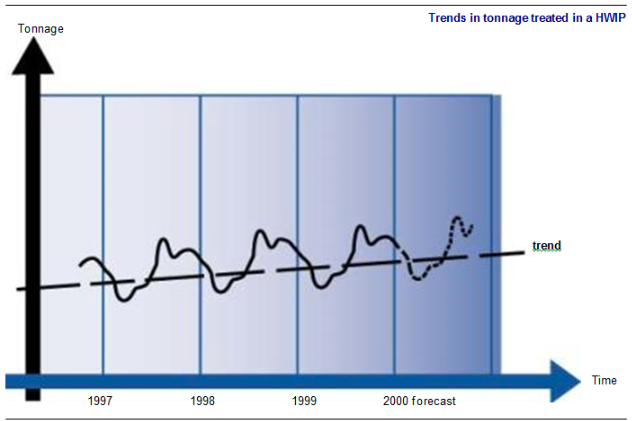
De la même façon, on peut prévoir l’évolution des apports de déchets pour l’année à venir. L’observation des graphiques d’apports durant deux à trois ans donne suffisamment d’information pour déterminer ce que sera l’année suivante, c’est le vécu.
Même si nous nous limitons ici à l’approche graphique de l’analyse prédictive, sachez qu’il existe des outils mathématiques puissants qui permettent d’obtenir des résultats d’une précision étonnante. Mais dans tous les cas, l’analyse ne sera fiable que si les informations de base sont de qualité.
Le suivi et l’analyse des statistiques d’exploitation poursuivent un double objectif : améliorer la qualité du service que nous rendons à nos clients et améliorer notre rentabilité.
Cela veut dire soit :
Afin de satisfaire nos clients et de consolider notre position dans un environnement de plus en plus concurrentiel, nous devons accroître nos gains de productivité. Prenons trois exemples pour illustrer l’importance d’un suivi rigoureux des statistiques d’exploitation.
On ne décrira pas volontairement la nature de la fuite d’eau, son origine n’ayant pas grande importance (fuite vapeur, détection de niveau défaillante occasionnant un débordement, chasse des toilettes vétuste, etc.).
Une fuite d’eau de 1 m3 par jour, soit un peu plus de quatre seaux de 10 l d’eau par heure, n’est pas détectée ou est ignorée pendant 1 an. Quel est son coût ?
\[ 1 000 litres 365 days = 365 000 litres = 365 m3 \]
1 m3 d’eau coûtant 20 francs, le coût total est de 365 x 20 = 7 300 francs ou 1 113 euros.
Une usine, selon sa technologie, consomme de 0,75 à 1,5 m3 d’eau par tonne de déchets incinérée. Prenons l’exemple d’une usine ayant deux lignes de 5 tonnes/heure et consommant 1 m3 d’eau par tonne. Que représente la fuite dans la statistique d’exploitation ?
Consommation journalière = 2 x 5 tonnes x 1 m3 x 24 heures = 240 m3 par jour Fuite = 1 m3 par jour
La fuite représente $ 1{241}$ = 0.4\
On voit bien l’importance et l’intérêt d’améliorer la conduite des équipements et de suivre rigoureusement les ratios de fonctionnement. En suivant le même calcul, une amélioration de 5\
Après une période de formation, les cinq chefs de quart d’une usine d’incinération de 2 x 5 tonnes/heure ont décidé de modifier la conduite des fours afin de stabiliser le débit de vapeur. Après quelques essais et de nombreux échanges, ils sont parvenus à gagner en moyenne 300 kg/h de vapeur par chaudière. Quel est l’impact économique de l’amélioration de la conduite ?
Si l’on considère par ailleurs que la tonne de vapeur est vendue à un industriel 150,00 francs ou 23 euros, l’amélioration représente :
\[ 300 kg/hours 2 8 000 heures/an = 4 800 000 kg/an \]
soit 4 800 tonnes/an représentant une augmentation des bénéfices de 4 800 x 150,00 = 720 000 francs soit 110 400 euros par an.
Que représente cette augmentation de débit vapeur ?
L’usine produit en moyenne 2,5 tonnes de vapeur par tonne de déchets
Production : \[ 2.5 2 5 8 000 = 200 000 tonnes/an \]
Gain : \[ 0.3 2 8 000 = 4 800 tonnes/an \]
Débit vapeur amélioré de : \[ 4800{200000} = 2.4 \ \]
{ ANNEXE : Récapitulatif des chiffres-clés}
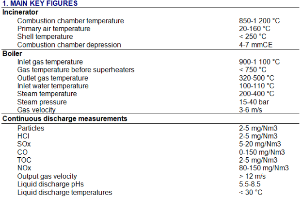
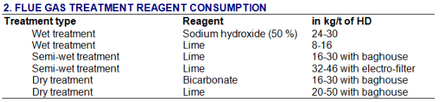
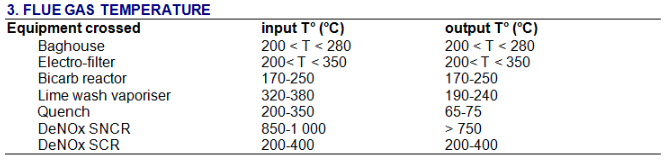
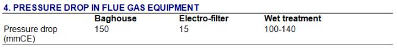
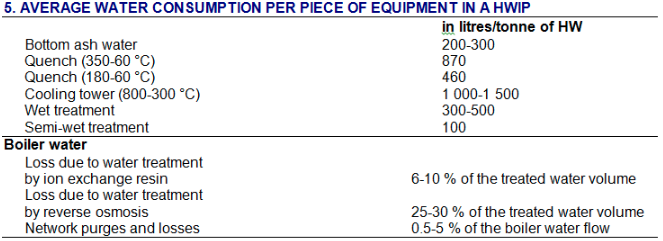
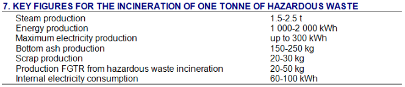
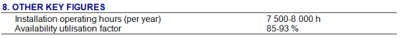
NOTA : Bien que ces chiffres ou ratio soient représentatifs d’une usine récente avec récupération d’énergie, il existe certains procédés dont les caractéristiques de fonctionnement diffèrent des valeurs indiquées.